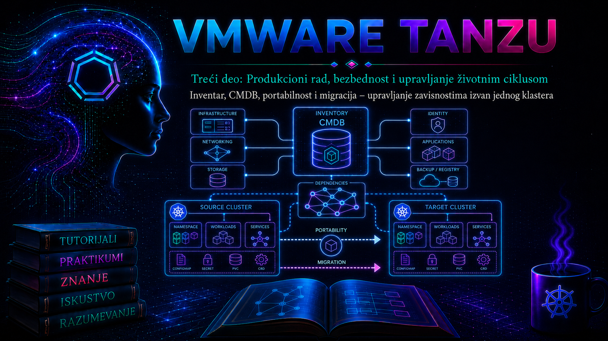

VMware & Tanzu

VMware Tanzu okruženje nije samo skup Kubernetes klastera. U realnom enterprise sistemu ono zavisi od vCenter Server inventara, ESXi hostova, klastera, datastore objekata, mreža, virtuelnih mašina, Supervisor instanci, namespace-ova, Tanzu Kubernetes klastera, aplikacionih workload-a i organizacionih podataka kao što su vlasnik, poslovna usluga, okruženje, kritičnost i centar troška. Kada ti podaci nisu povezani, administrator vidi tehničke objekte, ali organizacija ne može pouzdano da odgovori kome objekat pripada, koju uslugu podržava, da li je pokriven backup politikom i ko odobrava njegovu promenu.
Inventar predstavlja tehnički utvrđeno stanje resursa, dok Configuration Management Database, odnosno CMDB, predstavlja kontrolisani model konfiguracionih stavki, njihovih atributa, odnosa, vlasništva i životnog ciklusa. Inventar i CMDB zato nisu sinonimi. Inventar obično nastaje automatskim otkrivanjem ili čitanjem platformskih API-ja, dok CMDB podatke identifikuje, usklađuje sa drugim izvorima, povezuje sa poslovnim kontekstom i čuva kao osnovu za incident, change, problem, capacity, security i continuity procese.
Inventar kao osnova upravljanja Tanzu platformom
Inventar VMware i Tanzu platforme treba posmatrati slojevito. Infrastrukturni sloj obuhvata vCenter Server, datacentre, vSphere klastere, ESXi hostove, datastore objekte, mreže, resource pool objekte i virtuelne mašine. Platformski sloj obuhvata Supervisor, vSphere Namespace objekte, Tanzu Kubernetes klastere, njihove control plane i worker čvorove, verzije Kubernetes platforme i povezane storage i network politike. Aplikacioni sloj obuhvata namespace-ove unutar workload klastera, Deployment, StatefulSet, DaemonSet, Service, Ingress, PersistentVolumeClaim i druge objekte koji imaju operativni značaj.
Nije svaki Kubernetes objekat istovremeno i konfiguraciona stavka u CMDB-u. Podovi, ReplicaSet objekti i kratkotrajni Job workload-i mogu nastajati i nestajati više puta u toku jednog sata. Njihovo pojedinačno unošenje u CMDB proizvodi veliki broj zastarelih zapisa i umanjuje kvalitet podataka. U CMDB se obično unose stabilniji objekti: vCenter Server, klaster, ESXi host, virtuelna mašina, Kubernetes klaster, namespace koji predstavlja administrativnu ili poslovnu granicu, aplikaciona usluga, baza podataka, trajni storage servis i relevantni odnosi između njih.
Operativni inventar ipak može sadržati i dinamičke objekte. Razlika je u nameni: detaljan operativni inventar koristi se za monitoring, troubleshooting i kratkoročne analize, dok CMDB čuva kontrolisani prikaz konfiguracije od značaja za upravljanje uslugom. Administrator zato mora unapred definisati granicu između podataka koji se samo prikupljaju i podataka koji postaju CI zapisi.
vSphere Automation API omogućava programsko čitanje vCenter inventara i rad sa servisima za virtuelne mašine, hostove, klastere, datastore objekte, mreže, namespace management i tagging. Web Services API ostaje važan za operacije i svojstva koja nisu izložena kroz isti skup REST interfejsa, dok SearchIndex omogućava pronalaženje objekata prema UUID-u, IP adresi, DNS imenu i drugim identifikatorima. Izbor API-ja zavisi od verzije vCenter Server sistema i konkretnog podatka koji se prikuplja.
Identitet objekta i izbegavanje duplikata
Najvažniji tehnički problem CMDB integracije nije slanje JSON dokumenta, već pouzdano utvrđivanje identiteta objekta. Naziv virtuelne mašine nije dovoljan identifikator. Administrator može promeniti naziv, dve vCenter instance mogu imati objekat istog imena, a ponovna registracija virtuelne mašine može promeniti njen managed object identifier. Za virtuelne mašine se zato koriste stabilniji identifikatori, najčešće BIOS UUID ili instance UUID, zajedno sa identitetom izvornog vCenter Server sistema.
Managed object identifier, kao što je vm-1042, jedinstven je unutar jedne vCenter instance, ali nije prenosiv između različitih vCenter sistema i može se promeniti nakon uklanjanja i ponovne registracije objekta. DNS ime i IP adresa su korisni atributi za korelaciju, ali nisu pouzdani primarni identifikatori jer se menjaju, mogu biti privremeno prazni i zavise od stanja VMware Tools servisa i gostujućeg operativnog sistema.
Za Kubernetes objekte identitet čine kombinacija klastera, tipa objekta, namespace-a, imena i, kada je potrebno, Kubernetes UID vrednosti. UID razlikuje dve generacije objekta koje su koristile isto ime, ali novi UID nakon ponovnog kreiranja može biti poželjno tretirati kao novu tehničku instancu ili kao nastavak istog logičkog CI-ja. Tu odluku ne treba prepustiti skripti: ona mora biti deo CMDB identifikacionih pravila i politike životnog ciklusa.
| Objekat | Preporučeni identitet | Atributi za korelaciju | Nepouzdan samostalni identifikator |
|---|---|---|---|
| vCenter Server | instance UUID ili FQDN uz kontrolisanu registraciju | FQDN, verzija, lokacija | kratko ime |
| ESXi host | hardware UUID uz izvorni vCenter | FQDN, serijski broj, management IP | IP adresa |
| Virtuelna mašina | instance UUID ili BIOS UUID uz izvorni vCenter | ime, DNS ime, MoRef, MAC adrese | ime virtuelne mašine |
| Kubernetes klaster | platformski cluster ID ili kontrolisani globalni identifikator | ime, API endpoint, vCenter i namespace | samo ime klastera |
| Kubernetes namespace | cluster ID, namespace ime i po potrebi UID | owner, environment, cost center | namespace ime bez identiteta klastera |
VMware tagovi i kategorije
VMware tag je metapodatak koji se dodeljuje objektu vSphere inventara. Tag pripada kategoriji, a kategorija definiše kardinalnost i tipove objekata na koje se tag može primeniti. Kardinalnost SINGLE znači da objekat može imati samo jedan tag iz kategorije, dok MULTIPLE dozvoljava više vrednosti. Kategorije kao što su Environment, BusinessService, Owner, Criticality i BackupPolicy najčešće treba da imaju kardinalnost SINGLE, jer bi istovremeno označavanje jedne virtuelne mašine kao produkcione i razvojne bilo semantički neispravno.
Kategorija ComplianceScope ili ApplicationRole može opravdano dozvoliti više tagova. Jedna virtuelna mašina može, na primer, istovremeno biti obuhvaćena internom politikom zaštite podataka i regulatornim kontrolama, ili imati više tehničkih uloga koje organizacija želi da evidentira.
Tagovi nisu bezbednosna granica sami po sebi. Dodela taga Restricted ne menja automatski vSphere privilegije, mrežna pravila ili Kubernetes RBAC. Tag postaje kontrolni mehanizam tek kada je povezan sa automatizacijom, storage politikom, backup pravilom, dinamičkom grupom, izveštajem ili procesom odobravanja. Administrator mora razlikovati deklarativni metapodatak od kontrole koja taj metapodatak zaista primenjuje.
PowerCLI obezbeđuje cmdlet-e Get-TagCategory, Get-Tag, Get-TagAssignment, New-TagCategory, New-Tag i New-TagAssignment. Oni omogućavaju automatizovano čitanje i upravljanje tagovima, ali nalog mora imati odgovarajuće vCenter privilegije, a skripta mora proveriti da li kategorija ili tag već postoje pre pokušaja kreiranja.
Dobro definisan tag model koristi kontrolisan rečnik. Vrednosti Prod, Production i PRD ne smeju paralelno označavati isto stanje. Promena naziva taga mora se tretirati kao promena modela podataka, jer utiče na CMDB mapiranje, backup selekcije, izveštaje, automatizaciju i kontrole usklađenosti.
Kubernetes labels, annotations i poslovni metapodaci
Kubernetes label je par ključa i vrednosti namenjen identifikovanju i selekciji objekata. Label se koristi u selector izrazima, filtriranju i povezivanju workload-a sa servisima. Annotation čuva dodatni metapodatak koji se ne koristi za selekciju i može sadržati duže ili strukturisanije vrednosti. Zbog toga vrednosti kao što su environment=production i owner=payments-team mogu biti labels, dok broj change zahteva, CMDB sys_id, opis poslovne funkcije ili URL operativne dokumentacije bolje pripadaju annotations.
Preporučeni Kubernetes ključevi sa prefiksom app.kubernetes.io/ olakšavaju interoperabilnost između alata. Najčešće se koriste app.kubernetes.io/name, app.kubernetes.io/instance, app.kubernetes.io/component, app.kubernetes.io/part-of, app.kubernetes.io/version i app.kubernetes.io/managed-by. Organizacijski ključevi treba da koriste DNS prefiks koji organizacija kontroliše, na primer tashizza.example/environment ili tashizza.example/cost-center.
Metapodaci iz vSphere tagova i Kubernetes labels nisu automatski isti. vSphere tag može opisivati virtuelnu mašinu koja predstavlja worker čvor, dok Kubernetes label može opisivati aplikacioni Deployment. Integracija mora očuvati sloj kome podatak pripada i izbeći slepo kopiranje. Poslovna oznaka BusinessService=OnlinePayments može se propagirati kroz više slojeva, ali se identitet svakog objekta i dalje vodi odvojeno.
CMDB model, odnosi i autoritativni izvori
CMDB mora čuvati više od ravne liste resursa. Za analizu uticaja potrebno je evidentirati odnose: vCenter upravlja vSphere klasterom, klaster sadrži ESXi hostove, host izvršava virtuelne mašine, Supervisor obezbeđuje platformsku funkciju, Tanzu Kubernetes klaster koristi određeni namespace, a aplikaciona usluga zavisi od workload-a, baze podataka, mrežnih i storage servisa.
Netačan odnos može biti štetniji od nedostajućeg atributa. Ako CMDB pokaže da produkciona aplikacija ne zavisi od klastera koji se menja, change procena može propustiti kritičan uticaj. Odnose zato treba uvoziti samo kada izvor može pouzdano da ih potvrdi. Privremena pretpostavka zasnovana na sličnosti imena ne sme postati produkcioni odnos bez kontrole.
Za svaki atribut treba definisati autoritativni izvor. vCenter je obično autoritativan za stanje napajanja virtuelne mašine, CPU, memoriju, host, datastore i tehničke identifikatore. Kubernetes API je autoritativan za namespace, workload, željeni broj replika i labels. CMDB ili IT service management sistem može biti autoritativan za vlasnika poslovne usluge, kritičnost, lifecycle status i change podatke. Identity sistem može biti autoritativan za timove i korisničke naloge.
Kada više izvora može menjati isti atribut, bez reconciliation pravila nastaju oscilacije: jedan import upisuje vrednost, drugi je ubrzo vraća. ServiceNow Identification and Reconciliation Engine primenjuje identifikaciona, reconciliation i data source pravila pre upisa CI zapisa. Zvanična dokumentacija preporučuje korišćenje Identification and Reconciliation API-ja umesto direktnog ažuriranja CMDB tabela kada se obrađuju CI podaci iz spoljnog izvora. API nudi i query operaciju za simulaciju rezultata bez upisa, što je posebno važno za testiranje mapiranja.
Arhitektura integracije i bezbednosne granice
Referentna integracija u ovoj lekciji koristi upravljački server mgmt-automation-01.tashizza.example. Server čita vCenter inventar sa sistema vcsa-01.tashizza.example, čita Kubernetes podatke iz klastera tkg-prod-01 i šalje kontrolisani payload u ServiceNow instancu predstavljenu promenljivom SN_INSTANCE. Podaci se prvo zapisuju u direktorijum /opt/tanzu-cmdb/export, zatim se validiraju, transformišu i šalju kroz IRE API.
Integracioni nalog za vCenter treba da ima read-only pristup relevantnim datacentrima, klasterima, hostovima, virtuelnim mašinama i tagovima. Nalog za Kubernetes treba da ima samo get, list i, ako se koristi periodično praćenje, watch nad potrebnim resursima. CMDB integracioni nalog mora imati samo prava potrebna za IRE endpoint i odobrene CI klase. Tajne se ne smeju čuvati u skripti, Git repozitorijumu, CSV fajlu ili shell istoriji.
TLS sertifikati svih sistema moraju biti validirani. Parametri kao što su PowerCLI InvalidCertificateAction Ignore, curl --insecure ili Python verify=False nisu prihvatljivo produkciono rešenje. Interni CA lanac treba instalirati u trust store upravljačkog servera, a promena poverenja mora biti dokumentovana i odobrena.
Integracija mora biti idempotentna: ponovno pokretanje sa nepromenjenim izvorom ne sme praviti nove CI zapise. Takođe mora biti posmatriva. Za svaki ciklus treba evidentirati vreme početka, identitet izvora, broj pročitanih objekata, broj preskočenih objekata, rezultat validacije, odgovor CMDB sistema i correlation ID, ali ne i tajne ili pune autorizacione headere.
Integrisani praktikum: sinhronizacija VMware i Tanzu inventara sa CMDB sistemom
Poslovni i tehnički kontekst. Organizacija koristi vSphere klaster CL-TANZU-PROD i Tanzu Kubernetes klaster tkg-prod-01. Tim za change management zahteva da svaka produkciona virtuelna mašina ima poznatog vlasnika, poslovnu uslugu, kritičnost i backup politiku, a CMDB mora da se osvežava kontrolisanim, ponovljivim procesom.
Cilj. Kreirati kontrolisane VMware tag kategorije, dodeliti tagove testnoj virtuelnoj mašini tkg-prod-01-worker-01, izvesti vSphere i Kubernetes inventar, pripremiti IRE payload, prvo izvršiti simulaciju bez upisa, a zatim odobreni upis u CMDB.
Referentno okruženje. Upravljački server je Linux sistem mgmt-automation-01.tashizza.example sa PowerShell 7, VMware PowerCLI modulima, kubectl, jq i curl. vCenter je vcsa-01.tashizza.example, vSphere klaster je CL-TANZU-PROD, workload klaster je tkg-prod-01, a testni namespace je payments-prod.
Preduslovi i prava pristupa.
- vCenter read-only nalog ima pravo čitanja VM, host, cluster, datastore, network i tag podataka; poseban nalog za promenu ima minimalna prava za kreiranje i dodelu tagova.
- Kubeconfig
/opt/tanzu-cmdb/config/tkg-prod-01.kubeconfigpripada read-only service account nalogu. - CMDB tim je odobrio klasu
cmdb_ci_vm_instance, identifikaciono pravilo zasnovano naobject_idi izvor podatakaVMware Tanzu Inventory. - Organizacijski atributi
u_vcenter,u_environment,u_business_service,u_owner_group,u_criticalityiu_backup_policypostoje u odobrenom CMDB modelu. Prefiksu_označava lokalno proširenje i ne sme se pretpostaviti u drugoj organizaciji. - ServiceNow korisničko ime i token dostupni su kao zaštićene environment promenljive
SN_USERiSN_TOKEN; njihovo postavljanje nije prikazano u shell istoriji.
-
Priprema kontrolisanog radnog direktorijuma.
Direktorijumi se kreiraju sa ograničenim pravima jer export može sadržati interne nazive, IP adrese i identifikatore resursa.
Validacija: svi direktorijumi treba da pripadaju grupisudo install -d -m 0750 -o root -g tanzu-cmdb /opt/tanzu-cmdb sudo install -d -m 0750 -o root -g tanzu-cmdb /opt/tanzu-cmdb/config sudo install -d -m 0750 -o root -g tanzu-cmdb /opt/tanzu-cmdb/export sudo install -d -m 0750 -o root -g tanzu-cmdb /opt/tanzu-cmdb/log sudo -u tanzu-cmdb touch /opt/tanzu-cmdb/log/sync.log sudo chmod 0640 /opt/tanzu-cmdb/log/sync.logtanzu-cmdb, bez prava pisanja za ostale korisnike.namei -l /opt/tanzu-cmdb/export stat -c '%A %U %G %n' /opt/tanzu-cmdb/{config,export,log} -
Početna provera vCenter konekcije i inventara.
Administrator prvo potvrđuje identitet servera, dostupnost ciljnog klastera i postojanje testne virtuelne mašine. Kredencijal se unosi interaktivno i ne upisuje se u komandu.
Validacija: konekcija mora prikazati očekivani vCenter FQDN, klaster mora biti pronađen tačno jednom, a testna virtuelna mašina mora pripadati ciljnom okruženju. PowerCLIpwsh Import-Module VMware.PowerCLI $vc = "vcsa-01.tashizza.example" $cred = Get-Credential -Message "Unesite vCenter integracioni nalog" Connect-VIServer -Server $vc -Credential $cred Get-Cluster -Name "CL-TANZU-PROD" Get-VM -Name "tkg-prod-01-worker-01" | Select-Object Name, PowerState, NumCpu, MemoryGB, IdGet-VMHosti povezani cmdlet-i čitaju inventar samo u granicama privilegija prijavljenog korisnika. -
Provera postojećeg tag modela.
Pre kreiranja administrator proverava da li kategorije već postoje i da li imaju odgovarajuću kardinalnost.
Validacija: postojeća kategorija se ne menja automatski. Ako, na primer,$categoryNames = @( "Environment", "BusinessService", "OwnerGroup", "Criticality", "BackupPolicy" ) Get-TagCategory | Where-Object { $_.Name -in $categoryNames } | Select-Object Name, Cardinality, EntityType | Sort-Object NameEnvironmentveć ima kardinalnostMultiple, postupak se zaustavlja i pokreće se zaseban change za korekciju modela. -
Kreiranje nedostajućih kategorija i tagova.
Sledeći PowerShell blok je idempotentan: kreira samo objekte koji ne postoje. Kategorije su ograničene na virtuelne mašine i imaju kardinalnost
Single.
Validacija: svaka kategorija mora biti jedinstvena, imati kardinalnost$tagModel = @{ Environment = @("Production", "Test", "Development") BusinessService = @("OnlinePayments") OwnerGroup = @("PlatformOperations") Criticality = @("Critical", "High", "Medium", "Low") BackupPolicy = @("Gold", "Silver", "Bronze", "Excluded") } foreach ($categoryName in $tagModel.Keys) { $category = Get-TagCategory -Name $categoryName -ErrorAction SilentlyContinue if (-not $category) { $category = New-TagCategory ` -Name $categoryName` -Cardinality Single ` -EntityType VirtualMachine` -Description "Kontrolisana CMDB kategorija: $categoryName" } foreach ($tagName in $tagModel[$categoryName]) { $tag = Get-Tag -Name $tagName -Category $category -ErrorAction SilentlyContinue if (-not $tag) { New-Tag ` -Name $tagName` -Category $category ` -Description "Odobrena vrednost za kategoriju $categoryName" } } }Singlei sadržati samo odobrene vrednosti.foreach ($categoryName in $tagModel.Keys) { Get-TagCategory -Name $categoryName | Select-Object Name, Cardinality, EntityType Get-Tag -Category $categoryName | Select-Object Name, Category } -
Dodela tagova testnoj virtuelnoj mašini.
Pre promene čuva se trenutno stanje radi rollback-a. Zatim se svaka kategorija dovodi u željeno stanje.
Upozorenje: uklanjanje postojećeg taga može promeniti ponašanje backup, compliance ili automatizacionih pravila. U produkciji se prvo proveravaju sistemi koji koriste kategoriju, a promena se izvršava u okviru odobrenog change zahteva. Validacija:$vm = Get-VM -Name "tkg-prod-01-worker-01" Get-TagAssignment -Entity $vm | Select-Object Entity, Tag, @{N="Category";E={$_.Tag.Category.Name}} | Export-Csv ` -Path "/opt/tanzu-cmdb/export/tkg-prod-01-worker-01-tags-before.csv"` -NoTypeInformation $desiredTags = @{ Environment = "Production" BusinessService = "OnlinePayments" OwnerGroup = "PlatformOperations" Criticality = "High" BackupPolicy = "Gold" } foreach ($categoryName in $desiredTags.Keys) { $currentAssignments = Get-TagAssignment -Entity $vm | Where-Object { $_.Tag.Category.Name -eq $categoryName } foreach ($assignment in $currentAssignments) { if ($assignment.Tag.Name -ne $desiredTags[$categoryName]) { Remove-TagAssignment -TagAssignment $assignment -Confirm:$false } } $desiredTag = Get-Tag ` -Name $desiredTags[$categoryName]` -Category $categoryName if (-not (Get-TagAssignment -Entity $vm -Tag $desiredTag -ErrorAction SilentlyContinue)) { New-TagAssignment -Entity $vm -Tag $desiredTag } }
Očekuje se tačno po jedna vrednost za svih pet kategorija.Get-TagAssignment -Entity $vm | Select-Object @{N="VM";E={$_.Entity.Name}}, @{N="Category";E={$_.Tag.Category.Name}}, @{N="Tag";E={$_.Tag.Name}} | Sort-Object Category -
Izvoz vSphere inventara sa stabilnim identifikatorima.
Skripta čita virtuelne mašine iz ciljnog klastera, VMware extension data i tag dodele. VMware Tools podaci mogu biti prazni kada je VM ugašena ili Tools servis nije dostupan, pa se DNS i IP ne koriste kao primarni identitet.
Validacija: svaki zapis mora imati$cluster = Get-Cluster -Name "CL-TANZU-PROD" $inventory = foreach ($item in Get-VM -Location $cluster) { $assignments = Get-TagAssignment -Entity $item $tagMap = @{} foreach ($assignment in $assignments) { $tagMap[$assignment.Tag.Category.Name] = $assignment.Tag.Name } [PSCustomObject]@{ vcenter = $vc cluster = $cluster.Name name = $item.Name object_id = $item.ExtensionData.Config.InstanceUuid bios_uuid = $item.ExtensionData.Config.Uuid moref = $item.ExtensionData.MoRef.Value power_state = [string]$item.PowerState cpu_count = $item.NumCpu memory_gb = [math]::Round($item.MemoryGB, 2) guest_dns_name = $item.ExtensionData.Guest.HostName environment = $tagMap["Environment"] business_service = $tagMap["BusinessService"] owner_group = $tagMap["OwnerGroup"] criticality = $tagMap["Criticality"] backup_policy = $tagMap["BackupPolicy"] } } $inventory | ConvertTo-Json -Depth 4 | Set-Content -Path "/opt/tanzu-cmdb/export/vsphere-vm-inventory.json" -Encoding utf8 $inventory | Export-Csv -Path "/opt/tanzu-cmdb/export/vsphere-vm-inventory.csv" ` -NoTypeInformation -Encoding utf8object_id,vcenter,clusteriname. Produkcioni objekti bez obaveznih tagova ne šalju se automatski u CMDB kao potpuni podaci, već se izdvajaju u izveštaj o odstupanju.$invalid = $inventory | Where-Object { -not $_.object_id -or -not $_.environment -or -not $_.business_service -or -not $_.owner_group -or -not $_.criticality -or -not $_.backup_policy } $invalid | Export-Csv -Path "/opt/tanzu-cmdb/export/vsphere-vm-invalid.csv" ` -NoTypeInformation -Encoding utf8 "Ukupno: $($inventory.Count); neispravno: $($invalid.Count)" -
Prikupljanje Tanzu workload metapodataka.
Izlaskom iz PowerShell sesije administrator proverava kubeconfig, identitet klastera i namespace labels. Ovaj deo ne menja klaster.
Validacija: sveexit export KUBECONFIG=/opt/tanzu-cmdb/config/tkg-prod-01.kubeconfig kubectl config current-context kubectl cluster-info kubectl auth can-i get namespaces kubectl auth can-i list deployments.apps --all-namespaces kubectl get namespace payments-prod -o json | jq '{ cluster: "tkg-prod-01", name: .metadata.name, uid: .metadata.uid, labels: .metadata.labels, annotations: .metadata.annotations }' > /opt/tanzu-cmdb/export/payments-prod-namespace.jsonauth can-iprovere za čitanje treba da vrateyes, dok promena resursa nije potrebna.
Za read-only integracioni nalog očekuje sekubectl auth can-i delete namespaces kubectl auth can-i patch deployments.apps --all-namespaces jq . /opt/tanzu-cmdb/export/payments-prod-namespace.jsonnoza destruktivne ili izmenjivačke operacije. -
Negativni test metapodataka.
Proverava se da li namespace ima obavezne organizacijske oznake. Test treba namerno da odbije nepotpun zapis pre CMDB komunikacije.
Očekivani rezultat: izlazni kod jejq -e ' .labels["tashizza.example/environment"] != null and .labels["tashizza.example/business-service"] != null and .labels["tashizza.example/owner-group"] != null ' /opt/tanzu-cmdb/export/payments-prod-namespace.json0kada su sve oznake prisutne. Kod1znači da integracija mora evidentirati odstupanje i preskočiti poslovno mapiranje namespace-a. Skripta ne sme samostalno izmišljati vlasnika ili poslovnu uslugu na osnovu imena. -
Priprema IRE payload-a za testnu virtuelnu mašinu.
Payload se kreira iz proverljivog vSphere exporta. Primer koristi samo jedan objekat kako bi se pre masovne sinhronizacije potvrdili klasa, polja i identifikaciona pravila.
Validacija: dokument mora sadržati tačno jedan element, odobrenu klasu i neprazanjq ' map(select(.name == "tkg-prod-01-worker-01")) | { items: map({ className: "cmdb_ci_vm_instance", values: { name: .name, object_id: .object_id, discovery_source: "VMware Tanzu Inventory", short_description: ("VMware VM u klasteru " + .cluster), u_vcenter: .vcenter, u_environment: .environment, u_business_service: .business_service, u_owner_group: .owner_group, u_criticality: .criticality, u_backup_policy: .backup_policy } }) } ' /opt/tanzu-cmdb/export/vsphere-vm-inventory.json \ > /opt/tanzu-cmdb/export/ire-vm-payload.json jq . /opt/tanzu-cmdb/export/ire-vm-payload.jsonobject_id.jq -e ' (.items | length) == 1 and .items[0].className == "cmdb_ci_vm_instance" and (.items[0].values.object_id | length) > 0 ' /opt/tanzu-cmdb/export/ire-vm-payload.json -
Simulacija IRE obrade bez upisa.
Promenljiva
SN_INSTANCEsadrži samo hostname, na primerexample.service-now.com. Token se prenosi kroz environment promenljivu i ne ispisuje u log.
Validacija: HTTP zahtev mora biti uspešan, odgovor ne sme sadržati grešku mapiranja klase ili polja, a IRE rezultat mora pokazati da li bi objekat bio kreiran, pronađen ili ažuriran. Ako simulacija najavljuje kreiranje novog CI-ja iako CI sa istim: "${SN_INSTANCE:?Nedostaje SN_INSTANCE}" : "${SN_USER:?Nedostaje SN_USER}" : "${SN_TOKEN:?Nedostaje SN_TOKEN}" curl --fail-with-body --silent --show-error --request POST --user "${SN_USER}:${SN_TOKEN}" --header "Accept: application/json" --header "Content-Type: application/json" --data-binary @/opt/tanzu-cmdb/export/ire-vm-payload.json "https://${SN_INSTANCE}/api/now/identifyreconcile/query" | tee /opt/tanzu-cmdb/export/ire-query-response.json jq . /opt/tanzu-cmdb/export/ire-query-response.jsonobject_idveć postoji, postupak se zaustavlja zbog mogućeg pogrešnog identifikacionog pravila. -
Kontrolisani upis nakon odobrenja.
Ovaj korak menja CMDB i izvršava se tek kada su rezultat query operacije i change odobrenje provereni.
Validacija: odgovor mora sadržati uspešno obrađen CI bez neidentifikovanih ili delimično obrađenih elemenata. Dobijeni identifikator CI-ja evidentira se u change zapisu zajedno sa correlation ID vrednošću.curl --fail-with-body --silent --show-error \ --request POST \ --user "${SN_USER}:${SN_TOKEN}" \ --header "Accept: application/json" \ --header "Content-Type: application/json" \ --header "X-Correlation-ID: tanzu-cmdb-2026-07-39" \ --data-binary @/opt/tanzu-cmdb/export/ire-vm-payload.json \ "https://${SN_INSTANCE}/api/now/identifyreconcile" | tee /opt/tanzu-cmdb/export/ire-commit-response.json jq . /opt/tanzu-cmdb/export/ire-commit-response.json -
Završna funkcionalna provera i test idempotentnosti.
Isti odobreni payload šalje se drugi put. Drugi ciklus ne sme kreirati novi CI, već mora identifikovati postojeći zapis i eventualno potvrditi da nema promena.
Kriterijum uspeha: u CMDB-u postoji tačno jedan aktivan CI zacurl --fail-with-body --silent --show-error \ --request POST \ --user "${SN_USER}:${SN_TOKEN}" \ --header "Accept: application/json" \ --header "Content-Type: application/json" \ --header "X-Correlation-ID: tanzu-cmdb-2026-07-39-repeat" \ --data-binary @/opt/tanzu-cmdb/export/ire-vm-payload.json \ "https://${SN_INSTANCE}/api/now/identifyreconcile" | tee /opt/tanzu-cmdb/export/ire-repeat-response.json jq . /opt/tanzu-cmdb/export/ire-repeat-response.jsonobject_idtestne virtuelne mašine, njegovi tag atributi odgovaraju vCenter stanju, a ponovljeni import ne proizvodi duplikat. -
Logovi i troubleshooting.
Lokalni proces zapisuje sažetak u
/opt/tanzu-cmdb/log/sync.log. PowerCLI greške prikazuju se u PowerShell error stream-u, vCenter događaji i zadaci proveravaju se kroz vSphere Client, Kubernetes autorizacione greške vide se u odgovoru API servera i audit logu kada je audit logging omogućen, dok se IRE greške analiziraju u ServiceNow sistemskim i CMDB/IRE logovima prema ulozi i modelu implementacije.
HTTPprintf '%s source=%s vm=%s query=%s commit=%s\n' \ "$(date --iso-8601=seconds)" \ "vcsa-01.tashizza.example" \ "tkg-prod-01-worker-01" \ "completed" \ "completed" \ >> /opt/tanzu-cmdb/log/sync.log tail -n 20 /opt/tanzu-cmdb/log/sync.log kubectl get events -A --sort-by=.metadata.creationTimestamp | tail -n 30401ukazuje na problem autentikacije,403na nedovoljna prava ili ACL,400najčešće na neispravan payload ili polje, a uspešan HTTP status sa IRE greškom zahteva analizu identifikacionih i reconciliation pravila. Prazan vSphere export uz uspešnu konekciju često znači da nalog nema vidljivost nad ciljnom lokacijom, a ne da klaster nema virtuelne mašine. -
Rollback i cleanup.
CMDB rollback se ne izvodi automatskim brisanjem CI-ja, jer zapis može imati incidente, odnose ili audit istoriju. Pogrešan upis se prijavljuje CMDB timu, označava odgovarajućim lifecycle statusom ili koriguje kroz IRE nakon analize. Za VMware tagove koristi se sačuvani export prethodnog stanja.
Validacija: završno stanje se poredi sa fajlompwsh Import-Module VMware.PowerCLI $cred = Get-Credential Connect-VIServer -Server "vcsa-01.tashizza.example" -Credential $cred $vm = Get-VM -Name "tkg-prod-01-worker-01" Get-TagAssignment -Entity $vm | Where-Object { $_.Tag.Category.Name -in @( "Environment", "BusinessService", "OwnerGroup", "Criticality", "BackupPolicy" ) } | Remove-TagAssignment -Confirm:$false $previous = Import-Csv ` "/opt/tanzu-cmdb/export/tkg-prod-01-worker-01-tags-before.csv" foreach ($row in $previous) { $tag = Get-Tag -Name $row.Tag -Category $row.Category New-TagAssignment -Entity $vm -Tag $tag } Get-TagAssignment -Entity $vm | Select-Object @{N="Category";E={$_.Tag.Category.Name}}, @{N="Tag";E={$_.Tag.Name}}tkg-prod-01-worker-01-tags-before.csv. Tag kategorije se ne brišu kao deo rollback-a ako ih koriste drugi objekti.
Merljivi kriterijumi prihvatanja.
- Svaka ciljna virtuelna mašina ima neprazan instance UUID i poznat izvorni vCenter.
- Testna VM ima tačno po jedan tag iz svih pet obaveznih kategorija.
- Export broj objekata odgovara broju virtuelnih mašina vidljivih integracionom nalogu u klasteru
CL-TANZU-PROD. - Svi nepotpuni zapisi nalaze se u posebnom izveštaju i nisu neopaženo poslati kao pouzdani CMDB podaci.
- IRE query prolazi bez upisa i bez greške klase, polja ili identifikacije.
- Prvi commit kreira ili ažurira očekivani CI, a drugi commit ne kreira duplikat.
- Read-only Kubernetes nalog može da čita potrebne resurse, ali ne može da briše namespace niti menja Deployment.
- Log ne sadrži lozinku, token, Authorization header ili sadržaj kubeconfig kredencijala.
Najčešće greške i njihove posledice
Najčešća arhitektonska greška je tretiranje CMDB-a kao kopije kompletnog vCenter i Kubernetes inventara. Time se u CMDB unosi previše kratkotrajnih objekata, povećava broj zastarelih CI-jeva i otežava razlikovanje poslovno važnih komponenti od operativnog šuma. Druga greška je identifikacija prema imenu, koja nakon preimenovanja ili ponovnog kreiranja proizvodi duplikate.
Treća greška je direktno ažuriranje CMDB tabela bez IRE obrade. Takav pristup zaobilazi identifikaciona i reconciliation pravila i može prepisati podatke autoritativnijeg izvora. Table API ima legitimnu namenu za rad sa tabelama kada su prava i model jasno definisani, ali za integraciju CI podataka ServiceNow izričito nudi IRE API kao kontrolisani put. CMDB Instance API takođe radi sa pojedinačnim zapisima, ali sam CRUD poziv ne rešava identifikaciju i pomirenje više izvora.
Četvrta greška je automatsko uklanjanje CI-ja čim objekat nestane iz jednog inventarnog ciklusa. Privremeni problem konekcije, nedovoljna privilegija ili nedostupan vCenter mogu izgledati kao masovno brisanje resursa. Bezbedniji model koristi prag: objekat se prvo označava kao neviđen, zatim se proverava u više ciklusa, a tek nakon definisanog perioda i potvrde lifecycle procesa menja se status ili sprovodi retirement.
Peta greška je davanje administratorskih privilegija integracionom nalogu. Read-only inventar ne zahteva pravo gašenja virtuelnih mašina, menjanja klastera, kreiranja namespace-a ili brisanja workload-a. Kompromitovan nalog sa preširokim pravima pretvara integraciju za inventar u put do promene produkcije.
Administratorske prakse
| Praksa | Provera i učestalost | Odstupanje i prva reakcija | Dokumentovanje i mera uspeha |
|---|---|---|---|
| Pokriće obaveznim tagovima | PowerCLI Get-TagAssignment izveštaj jednom dnevno i nakon provisioning procesa |
Bilo koja produkciona VM bez Environment, OwnerGroup ili BusinessService taga; blokirati automatski CMDB import tog zapisa i otvoriti zadatak vlasniku | Izveštaj u kontrolisanom repozitorijumu; najmanje 98% ukupnog pokrića i 100% za kritične produkcione VM objekte |
| Duplikati identiteta | CMDB upit prema object_id nakon svakog importa i dnevni quality job |
Više od jednog aktivnog CI-ja za isti UUID i vCenter; zaustaviti sledeći commit i analizirati IRE pravilo | CMDB remediation zapis i change; cilj je nula aktivnih duplikata |
| Uspešnost sinhronizacije | Broj pročitanih, validnih, preskočenih i obrađenih zapisa po ciklusu | Pad broja inventarisanih objekata veći od 10% bez odobrene promene; proveriti konekciju, scope privilegija i izvorni inventar pre menjanja CMDB-a | Operativni dashboard i sync log; najmanje 99% uspešnih planiranih ciklusa mesečno |
| Kontrola privilegija | Kvartalni pregled vCenter role, Kubernetes kubectl auth can-i i CMDB uloga, kao i nakon promene integracije |
Bilo koje pravo izmene koje nije potrebno; ukloniti privilegiju kroz odobreni access change | IAM evidencija sa vlasnikom i datumom isteka; bez privilegija za brisanje i administraciju infrastrukture |
| Validacija TLS poverenja | Praćenje isteka sertifikata najmanje 30 dana unapred i test nakon obnove | Nevažeći lanac, promenjen issuer ili preostalo manje od 30 dana; proveriti PKI zahtev i planirati obnovu | PKI evidencija; svi endpoint-i prolaze validaciju bez insecure opcija |
| Kontrola CMDB autoriteta | Pregled reconciliation pravila nakon dodavanja izvora ili novog atributa | Integracija prepisuje vlasnika ili lifecycle status čiji je autoritet drugi sistem; obustaviti mapiranje tog atributa | CMDB data governance dokument; nema neželjenih oscilacija vrednosti između izvora |
Backup i oporavak integracije. Čuvaju se verzionisane skripte, mapiranja polja, tag model, konfiguracija rasporeda, RBAC manifesti, dokumentovana IRE pravila i primeri sanitizovanih payload-a. Tajne se čuvaju u odobrenom secret manager sistemu i ne ulaze u backup izvornog koda. Konfiguracioni backup se radi nakon svake odobrene promene i najmanje jednom nedeljno, u šifrovanom repozitorijumu sa odvojenom kontrolom pristupa.
Integritet se proverava checksum vrednostima, Git potpisima ili kontrolom verzije. Probni restore se radi najmanje kvartalno u testnom okruženju: vraća se konfiguracija, pokreće inventar bez CMDB commit-a i izvršava IRE query simulacija. Backup je upotrebljiv tek kada obnovljena integracija proizvede isti broj i strukturu validnih zapisa kao referentni test i kada ne zahteva nedokumentovane ručne korake.
Kontrolna lista
- Potvrđen je FQDN, instance identitet i verzija svakog izvornog vCenter Server sistema.
- Za VM identifikaciju koristi se stabilni UUID zajedno sa identitetom izvora, a ne samo ime ili IP adresa.
- Tag kategorije imaju dokumentovanu namenu, kardinalnost, dozvoljene vrednosti i vlasnika modela.
- PowerCLI izveštaj potvrđuje po jedan obavezni tag za svaku kritičnu produkcionu VM.
- Kubernetes labels koriste kontrolisan organizacijski prefiks, a annotations ne učestvuju u selector logici.
- Read-only nalozi prolaze potrebne
getilistprovere, ali ne mogu da brišu ili menjaju resurse. - Export sa nepotpunim UUID ili obaveznim poslovnim atributima završava u izveštaju o odstupanju.
- IRE query simulacija je završena bez upisa i bez grešaka mapiranja.
- Ponovljeni IRE commit identifikuje postojeći CI i ne kreira duplikat.
- CMDB odnosi potiču iz potvrđenih izvora, a ne iz pretpostavke zasnovane na sličnosti imena.
- TLS validacija radi bez
--insecure,verify=Falseili ignorisanja nepoznatog sertifikata. - Log sadrži vreme, izvor, broj objekata, rezultat i correlation ID, ali ne sadrži tajne.
- Rollback tagova je testiran pomoću prethodno izvezenog stanja.
- CMDB CI se ne briše automatski nakon jednog neuspešnog ili praznog inventarnog ciklusa.
- Change zapis sadrži mapiranje polja, kriterijume prihvatanja, rezultate testova i identitet izvršioca.
Zaključak
Administrator nakon ove lekcije treba da razume da kvalitetan inventar nije samo lista imena i IP adresa. On mora sadržati stabilan identitet objekta, izvor podatka, tehničko stanje, poslovni kontekst i dovoljno informacija da se promene mogu pratiti bez stvaranja duplikata. VMware tagovi i Kubernetes metapodaci daju organizaciji zajednički jezik, ali njihova vrednost zavisi od kontrolisanog modela, dosledne primene i automatizacije koja razlikuje pouzdane podatke od nepotpunih ili konfliktnih zapisa.
Administrator treba da ume da kreira i proveri tag kategorije, izveze vSphere inventar sa stabilnim UUID vrednostima, proveri Kubernetes labels i RBAC, transformiše podatke u kontrolisani payload i testira CMDB identifikaciju pre produkcionog upisa. Takođe mora da prepozna razliku između problema autentikacije, autorizacije, vidljivosti inventara, neispravnog mapiranja, neusaglašenog izvora i pogrešnog identifikacionog pravila.
Najveći produkcioni rizici su duplikati CI zapisa, prepisivanje podataka autoritativnijeg izvora, masovno pogrešno povlačenje statusa, automatsko brisanje nakon privremenog prekida i preširoke privilegije integracionog naloga. Zbog toga promena tag modela, identifikacionog pravila, CI klase ili reconciliation prioriteta nije obična izmena skripte, već promena enterprise modela upravljanja konfiguracijom.
Granica ovlašćenja administratora mora biti jasna. Platformski administrator može dokazati tehnički identitet i stanje objekta, ali ne treba samostalno da određuje poslovnog vlasnika, regulatornu klasifikaciju ili lifecycle odluku bez potvrde odgovornog tima. Neslaganje između izvora, masovna promena broja objekata, neobjašnjeno kreiranje duplikata, potreba za promenom CMDB identifikacionih pravila ili sumnja da bi rollback uticao na povezane ITSM procese predstavljaju razlog za eskalaciju CMDB, security, service management ili data governance timu.
Migracija sa VMware Tanzu platforme na drugu Kubernetes platformu nije prost postupak izvoza klastera i njegovog uvoza na novu infrastrukturu. Kubernetes objekti jesu deklarativni i u velikoj meri prenosivi, ali produkciona aplikacija zavisi i od storage sistema, mrežnih kontrolera, ingress implementacije, identiteta, sertifikata, registry-ja, operatora, bezbednosnih politika i funkcija koje mogu biti specifične za Tanzu, vSphere ili određeno izdanje Kubernetes platforme. Zbog toga se migrira aplikacioni sistem, a ne sam klaster.
Administrator pre migracije mora da razdvoji prenosive Kubernetes resurse od platformski zavisnih komponenti. Deployment, Service, ConfigMap, standardni RBAC objekti i većina Pod specifikacija obično mogu da se prilagode drugom Kubernetes okruženju. Nasuprot tome, StorageClass, PersistentVolume, LoadBalancer adrese, CSI snapshot objekti, Tanzu PackageInstall resursi, vSphere CSI parametri, NSX mrežne politike, OpenShift Route objekti i operatori zahtevaju posebno mapiranje ili zamenu.
Od pouzdanog inventara do odluke o portabilnosti
CMDB sinhronizacija iz prvog dela praktikuma nije sama sebi cilj: njeni stabilni identifikatori, potvrđeni odnosi i autoritativni izvori postaju ulaz u procenu migracije. Tek kada organizacija zna koji workload zavisi od kog registra, storage-a, mreže, identiteta, operatora, sertifikata, spoljnog servisa i poslovnog vlasnika, može da odredi šta se prenosi deklarativno, šta se ponovo izdaje, šta zahteva transformaciju i šta uopšte nije prenosivo.
Portabilnost zato nije osobina jednog YAML fajla, već dokaziva sposobnost da se aplikaciona funkcija obnovi na ciljnoj platformi uz prihvatljiv RPO, RTO, bezbednosni profil i operativni model. Sledeći deo lekcije koristi inventar zavisnosti kao kontrolnu ravan za migraciju sa Tanzu workload klastera na OpenShift. Isti metod važi i za vanilla Kubernetes ili drugu podržanu distribuciju, ali konkretni API-ji, ingress, storage, identity i security mehanizmi moraju se proveriti na ciljnoj verziji.
Šta se stvarno migrira između Kubernetes platformi
Predmet migracije treba podeliti najmanje na šest slojeva: aplikacione manifest fajlove, kontejnerske image-e, konfiguraciju i tajne, trajne podatke, platformske servise i spoljne integracije. Svaki sloj ima drugačiji postupak prenosa, vlasnika, rizik i kriterijum uspeha.
| Sloj | Tipičan sadržaj | Način migracije | Glavni rizik |
|---|---|---|---|
| Kubernetes resursi | Deployment, Service, ConfigMap, RBAC, NetworkPolicy | Git, Kustomize, Helm ili kontrolisan eksport | Prenos statusnih i platformski generisanih polja |
| Kontejnerski image-i | Aplikacije, init kontejneri, pomoćni alati | Kopiranje između registry-ja i provera digest vrednosti | Nedostupan image ili promenjen sadržaj taga |
| Tajne i identiteti | Lozinke, tokeni, TLS ključevi, ServiceAccount pristupi | Ponovno izdavanje iz Vault, PKI ili drugog sistema tajni | Izlaganje tajni i prenos zastarelih kredencijala |
| Trajni podaci | Baze, datoteke, redovi poruka, objektni storage | Aplikacioni eksport, replikacija ili podržani backup/restore | Nekonzistentni podaci i prekoračen dozvoljeni prekid |
| Platformski servisi | Ingress, CSI, monitoring, registry, operatori | Mapiranje na funkcionalni ekvivalent ciljne platforme | Pogrešna pretpostavka o kompatibilnosti |
| Spoljne integracije | DNS, firewall, IAM, CI/CD, SIEM, CMDB | Kontrolisana promena endpointa i autorizacije | Prekid zavisnih poslovnih procesa |
Direktan backup etcd baze izvornog klastera nije univerzalni migracioni mehanizam. Etcd snapshot predstavlja stanje konkretnog control plane-a i koristi se za oporavak kompatibilnog klastera prema proceduri njegove distribucije. Njegovo vraćanje u klaster druge distribucije može uneti nekompatibilne API resurse, admission konfiguraciju, identitete čvorova i interne objekte. Za migraciju između Tanzu, vanilla Kubernetes i OpenShift platformi bezbedniji je deklarativni ponovni deployment uz kontrolisan prenos podataka.
Procena izvornog Tanzu okruženja
Naziv Tanzu obuhvata više modela implementacije, pa postupak počinje tačnim utvrđivanjem proizvoda i verzije. Tanzu Kubernetes Grid sa standalone management klasterom, Kubernetes klasteri na vSphere Supervisor platformi i Tanzu Kubernetes Grid Integrated Edition nemaju identičan lifecycle, backup model ni skup platformski upravljanih resursa. Administrator mora evidentirati Kubernetes verziju, Container Storage Interface drajver, Container Network Interface, ingress kontroler, način izdavanja LoadBalancer adresa, registry i dodatne Tanzu pakete.
Terminologija se menjala kroz izdanja: u novijoj Broadcom dokumentaciji klasteri koje obezbeđuje Supervisor pojavljuju se kao vSphere Kubernetes Service, odnosno VKS klasteri, dok starija okruženja i dokumentacija mogu koristiti nazive Tanzu Kubernetes cluster ili TKC. Naziv objekta, podržani API i lifecycle postupak zato se proveravaju na stvarnoj verziji Supervisor-a i vCenter Server-a; lekcija ne pretpostavlja da se manifest ili komanda iz jednog izdanja može bez provere primeniti na drugo.
Inventar nije samo rezultat komande kubectl get all. Ta komanda ne prikazuje ConfigMap, Secret, PersistentVolumeClaim, NetworkPolicy, Ingress, CustomResourceDefinition, admission webhook, PodDisruptionBudget niti brojne prilagođene resurse. Potrebno je pregledati API resurse, identifikovati objekte aplikacije i proveriti koji operator ili kontroler upravlja svakim od njih.
kubectl --context tkg-prod version
kubectl --context tkg-prod api-resources
kubectl --context tkg-prod get nodes -o wide
kubectl --context tkg-prod get storageclass
kubectl --context tkg-prod get crd
kubectl --context tkg-prod get deploy,sts,ds,svc,ingress,pvc,networkpolicy,pdb \
-n inventory-prodPosebnu pažnju zahtevaju anotacije i polja koja dodaju Tanzu, vSphere CSI, NSX, cert-manager, Contour, Harbor integracije ili alati za GitOps. Njihovo slepo prenošenje može izazvati odbijanje objekta, čekanje na kontroler koji ne postoji ili pogrešno mrežno ponašanje. Status, UID, resourceVersion, managedFields, creationTimestamp i finalizeri izvornog klastera ne pripadaju prenosivom deklarativnom stanju.
Izbor ciljne platforme i analiza razlika
Vanilla Kubernetes nije jedan gotov proizvod, već upstream Kubernetes sastavljen sa izabranim CNI, CSI, ingress, monitoring, backup i lifecycle komponentama. On daje najveću slobodu, ali administrator preuzima odgovornost za izbor, integraciju i podršku tih komponenti. Migracija je opravdana kada organizacija želi standardizovan Kubernetes bez distribucijski specifičnog aplikacionog sloja i ima tim sposoban da održava kompletnu platformu.
OpenShift Container Platform dodaje sopstveni operativni model, uključujući operatore, Routes, integrisanu registry i monitoring infrastrukturu, OAuth, Machine API u podržanim okruženjima i strože podrazumevane bezbednosne kontrole. Aplikacija koja na Tanzu klasteru radi kao fiksni korisnik ili kao root može biti odbijena na OpenShift platformi. Najprenosiviji kontejner može da radi sa proizvoljnim neprivilegovanim UID-om, ne zahteva pisanje u root filesystem i ne zahteva privilegovane Linux capabilities.
Druge distribucije, kao što su managed Kubernetes servisi ili platforme zasnovane na Cluster API-ju, imaju sopstvene storage klase, load balancer implementacije, identitetske mehanizme i politike nadogradnje. Ciljna platforma se zato ne bira samo prema Kubernetes verziji, već prema potrebnom Service Level Objective-u, regulatornim zahtevima, modelu podrške, dostupnim CSI funkcijama, mrežnoj topologiji i sposobnosti tima da njome upravlja.
Prenosivost manifest fajlova i uklanjanje platformske zavisnosti
Najbezbedniji izvor manifest fajlova jeste verzionisani Git repozitorijum, a ne eksport aktivnih objekata. Aktivni objekti sadrže default vrednosti i promene kontrolera koje nisu nužno deo nameravane konfiguracije. Kada Git izvor ne postoji, eksport može poslužiti za rekonstrukciju, ali svaki manifest mora biti očišćen i pregledan pre primene.
Pre migracije treba razlikovati zajedničku osnovu i platformske slojeve. Zajednički direktorijum može sadržati Namespace, Deployment, Service, ConfigMap, PodDisruptionBudget i standardnu NetworkPolicy. Tanzu overlay može referencirati postojeću ingress klasu i storage klasu, dok OpenShift overlay može dodati Route, drugačiji StorageClass i bezbednosni kontekst. Kustomize ili Helm omogućavaju da razlike budu eksplicitne, pregledive i testirane, umesto da administrator ručno menja produkcione fajlove tokom cutover-a.
API kompatibilnost mora biti proverena prema ciljnoj Kubernetes verziji. Resurs koji koristi uklonjenu beta API verziju neće biti prihvaćen, a isto ime API-ja ne garantuje isto ponašanje ako ga realizuje drugi kontroler. Serverska dry-run provera koristi API server ciljnog klastera i otkriva nepoznate vrste, neispravna polja i deo admission problema bez trajnog kreiranja resursa.
kubectl --context ocp-prod apply \
--server-side --dry-run=server \
-k migration/inventory/overlays/openshiftStorage i migracija trajnih podataka
PersistentVolumeClaim je zahtev za storage, ali ne sadrži poslovne podatke. PersistentVolume vezan za vSphere datastore ne postaje automatski dostupan OpenShift ili cloud klasteru. Čak i kada oba klastera koriste CSI, snapshot objekti i snapshot sadržaj zavise od drajvera, storage sistema, dozvola i topologije. Zbog toga se najpre bira metod prenosa podataka, a tek zatim Kubernetes objekti.
Za bazu podataka preferira se metod koji podržava proizvođač baze: logički dump i restore, fizički backup kompatibilne verzije, streaming replikacija ili alat za migraciju baze. Za datotečne repozitorijume mogu se koristiti CSI snapshot i restore kada su oba klastera i storage backend kompatibilni, ili kontrolisano kopiranje uz proveru kontrolnih suma. Velero može da prenese Kubernetes resurse i, zavisno od konfiguracije, podatke volumena, ali administrator mora proveriti podržani plugin, način snimanja volumena i ograničenja migracije između različitih storage provajdera.
Doslednost podataka zahteva definisanu tačku preseka. Crash-consistent kopija volumena nije uvek application-consistent backup. Za bazu se mora koristiti njen backup mehanizam ili privremeno zaustaviti upis. Prekid se skraćuje prekopiranjem većeg dela podataka unapred, a zatim završnom sinhronizacijom tokom kontrolisanog cutover prozora.
Mreža, DNS, ingress i spoljne integracije
Service tipa ClusterIP dobija novu adresu na ciljnom klasteru i aplikacije ne smeju zavisiti od stare ClusterIP vrednosti. Service tipa LoadBalancer dobija adresu prema ciljnoj implementaciji, dok se ingress klasa, anotacije i TLS način mogu razlikovati. OpenShift Route nije standardni Kubernetes resurs, pa je odluka da li će se koristiti standardni Ingress ili Route deo ciljne arhitekture.
DNS promena mora biti planirana pre cutover-a. Time To Live vrednost se smanjuje dovoljno rano, ali ne treba pretpostaviti da svi resolveri momentalno odbacuju stare zapise. Za kritične aplikacije koriste se kontrolisana promena, provera sa više mrežnih lokacija i mogućnost povratka DNS zapisa. Firewall pravila, proxy dozvole, allow liste partnera, OAuth redirect URL-ovi i webhook endpointi moraju biti promenjeni zajedno sa javnom adresom.
NetworkPolicy se prenosi samo ako ciljni CNI podržava korišćene funkcije i selektore na isti način. Normalno stanje nakon migracije nije samo da su podovi u statusu Running, već da su dozvoljeni tokovi uspešni, a zabranjeni tokovi i dalje odbijeni.
Identiteti, tajne i bezbednosne politike
ServiceAccount objekat može biti ponovo kreiran, ali tokeni izvornog klastera ne prenose se. Klaster izdaje sopstvene kratkotrajne tokene i potpisuje ih svojim ključevima. Isto važi za kubeconfig fajlove, node sertifikate i interne service-serving sertifikate. Migracija je prilika da se tajne rotiraju, a ne da se kopiraju iz izvornog Secret objekta u nešifrovanu datoteku.
Tajne treba ponovo generisati iz sistema koji predstavlja autoritativni izvor, kao što su enterprise secrets manager, PKI ili password vault. Privremeni fajlovi sa tajnama ne smeju u Git, backup izveštaje ili administratorske dnevnike. Kada je nužan kontrolisan prenos, sadržaj mora biti šifrovan, pristup evidentiran, a privremena kopija bezbedno uklonjena nakon validacije.
OpenShift bezbednosni model često otkriva neprenosive image-e. Kontejner treba da koristi runAsNonRoot, da ukloni nepotrebne capabilities, zabrani privilege escalation i koristi read-only root filesystem kada aplikacija to podržava. Dodela privilegovanog Security Context Constraint-a radi brzog završetka migracije samo prikriva problem i povećava produkcioni rizik.
Strategija migracije, cutover i rollback
Najbezbedniji pristup je paralelno postavljanje ciljnog okruženja. Blue-green model omogućava da izvorna Tanzu instanca ostane aktivna dok se ciljna instanca gradi i testira. Za stateless aplikaciju prelazak može biti gotovo neprimetan. Kod stateful sistema rollback je složeniji jer nakon prvog upisa u novu bazu povratak DNS-a na staru aplikaciju može vratiti korisnike na zastarele podatke.
Rollback tačka zato mora biti definisana unapred. Pre otvaranja ciljne aplikacije za upis moguće je vratiti saobraćaj na izvor. Posle prihvatanja produkcionih upisa potreban je reverzni prenos podataka ili poslovna odluka o zadržavanju ciljne platforme i rešavanju problema na njoj. Administrator ne sme obećati brz rollback ako plan ne obuhvata smer sinhronizacije podataka.
Kriterijumi prihvatanja uključuju funkcionalne testove, integritet podataka, dozvoljeni error rate, odziv, dostupnost zavisnosti, bezbednosne testove, validan TLS lanac i potvrdu nadzornih sistema. Tek nakon isteka perioda pojačanog nadzora mogu se ukloniti izvorni workload-i i pripadajući resursi.
Integrisani praktikum: migracija aplikacije inventory sa Tanzu klastera na OpenShift
Poslovni i tehnički kontekst. Organizacija premešta internu aplikaciju inventory-api iz Tanzu Kubernetes Grid klastera u OpenShift Container Platform. Aplikacija radi u namespace-u inventory-prod, koristi PostgreSQL bazu i dostupna je preko imena inventory.example.internal. Cilj je kontrolisan prekid kraći od 20 minuta, očuvanje svih redova baze i mogućnost povratka pre otvaranja ciljnog sistema za upis.
Referentno okruženje. Izvorni kubeconfig context je tkg-prod, ciljni je ocp-prod. Administratorska radna stanica ima kubectl, oc, kustomize, pg_dump, pg_restore i pristup Git repozitorijumu. Ciljni registry sadrži image registry.ocp.example.internal/apps/inventory-api@sha256:REPLACE_WITH_VERIFIED_DIGEST. Direktorijum rada je migration/inventory.
Prava pristupa. Na izvornom klasteru potreban je read pristup workload resursima, pravo za izvršavanje komande u PostgreSQL podu i kontrolisano skaliranje aplikacije. Na ciljnom klasteru potreban je namespace administratorski pristup, ali ne i cluster-admin ako su StorageClass, ingress i potrebni operatori već obezbeđeni. DNS promenu izvršava ovlašćeni mrežni ili DNS administrator prema odobrenom change zapisu.
-
Napraviti radnu strukturu i evidentirati početno stanje.
Pre svake promene čuvaju se inventar, broj replika, image digest, PVC zahtevi i aktivni endpointi. Secret sadržaj se ne izvozi u ovaj direktorijum.
Validacija: fajlovi moraju biti neprazni, aplikacija mora imati očekivani broj replika, a PVC status mora bitimkdir -p migration/inventory/{evidence,base,overlays/openshift,backup} kubectl --context tkg-prod get deploy,sts,svc,ingress,pvc,networkpolicy,pdb -n inventory-prod -o wide > migration/inventory/evidence/source-inventory.txt kubectl --context tkg-prod get deployment inventory-api -n inventory-prod -o jsonpath='{.spec.replicas}{"\n"}{.spec.template.spec.containers[0].image}{"\n"}' > migration/inventory/evidence/source-deployment.txt kubectl --context tkg-prod get pvc inventory-db -n inventory-prod -o yaml > migration/inventory/evidence/source-pvc-reference.yamlBound.test -s migration/inventory/evidence/source-inventory.txt kubectl --context tkg-prod get pvc inventory-db -n inventory-prod kubectl --context tkg-prod get pods -n inventory-prod -o wide -
Proveriti ciljnu platformu i potrebne kapacitete.
Proveravaju se verzija API servera, dostupna storage klasa, ingress kontroler i namespace kvota. U ovom primeru ciljna storage klasa je
ocs-storagecluster-ceph-rbd.
Validacija: svi ciljni čvorovi koji će primati workload moraju biti Ready, storage klasa mora postojati, a njena politika reclaim-a i volume binding režim moraju biti poznati pre kreiranja PVC-a.kubectl --context ocp-prod version kubectl --context ocp-prod get nodes kubectl --context ocp-prod get storageclass kubectl --context ocp-prod get ingressclass kubectl --context ocp-prod get resourcequota -Akubectl --context ocp-prod get storageclass ocs-storagecluster-ceph-rbd -o yaml -
Pripremiti prenosive manifest fajlove.
Zajednički manifest kreira namespace, PostgreSQL servis i StatefulSet, PVC template, API Deployment, Service i NetworkPolicy. Tajne se referenciraju, ali se njihove vrednosti ne upisuju u Git.
Validacija: renderovani YAML mora biti sintaksno ispravan, a ciljna serverska dry-run provera ne sme prijaviti nepoznat API ili admission grešku. Digest placeholderi moraju biti zamenjeni odobrenim vrednostima pre produkcione primene.cat > migration/inventory/base/resources.yaml <<'EOF' apiVersion: v1 kind: Namespace metadata: name: inventory-prod --- apiVersion: v1 kind: Service metadata: name: inventory-db namespace: inventory-prod spec: selector: app: inventory-db ports: - name: postgresql port: 5432 targetPort: 5432 --- apiVersion: apps/v1 kind: StatefulSet metadata: name: inventory-db namespace: inventory-prod spec: serviceName: inventory-db replicas: 1 selector: matchLabels: app: inventory-db template: metadata: labels: app: inventory-db spec: securityContext: runAsNonRoot: true seccompProfile: type: RuntimeDefault containers: - name: postgresql image: registry.redhat.io/rhel9/postgresql-16@sha256:REPLACE_WITH_VERIFIED_DIGEST env: - name: POSTGRESQL_DATABASE value: inventory - name: POSTGRESQL_USER valueFrom: secretKeyRef: name: inventory-db-credentials key: username - name: POSTGRESQL_PASSWORD valueFrom: secretKeyRef: name: inventory-db-credentials key: password ports: - containerPort: 5432 volumeMounts: - name: database mountPath: /var/lib/pgsql/data readinessProbe: exec: command: - /bin/sh - -c - pg_isready -U "$POSTGRESQL_USER" -d "$POSTGRESQL_DATABASE" initialDelaySeconds: 10 periodSeconds: 5 resources: requests: cpu: 250m memory: 512Mi limits: memory: 2Gi volumeClaimTemplates: - metadata: name: database spec: accessModes: - ReadWriteOnce storageClassName: ocs-storagecluster-ceph-rbd resources: requests: storage: 20Gi --- apiVersion: apps/v1 kind: Deployment metadata: name: inventory-api namespace: inventory-prod spec: replicas: 2 selector: matchLabels: app: inventory-api template: metadata: labels: app: inventory-api spec: securityContext: runAsNonRoot: true seccompProfile: type: RuntimeDefault containers: - name: inventory-api image: registry.ocp.example.internal/apps/inventory-api@sha256:REPLACE_WITH_VERIFIED_DIGEST env: - name: DB_HOST value: inventory-db - name: DB_NAME value: inventory - name: DB_USER valueFrom: secretKeyRef: name: inventory-db-credentials key: username - name: DB_PASSWORD valueFrom: secretKeyRef: name: inventory-db-credentials key: password ports: - containerPort: 8080 readinessProbe: httpGet: path: /health/ready port: 8080 periodSeconds: 5 livenessProbe: httpGet: path: /health/live port: 8080 initialDelaySeconds: 20 periodSeconds: 10 securityContext: allowPrivilegeEscalation: false capabilities: drop: - ALL resources: requests: cpu: 100m memory: 128Mi limits: memory: 512Mi --- apiVersion: v1 kind: Service metadata: name: inventory-api namespace: inventory-prod spec: selector: app: inventory-api ports: - name: http port: 8080 targetPort: 8080 --- apiVersion: networking.k8s.io/v1 kind: NetworkPolicy metadata: name: inventory-default-deny namespace: inventory-prod spec: podSelector: {} policyTypes: - Ingress - Egress EOF cat > migration/inventory/base/kustomization.yaml <<'EOF' resources: - resources.yaml +EOF cat > migration/inventory/overlays/openshift/route.yaml <<'EOF' apiVersion: route.openshift.io/v1 kind: Route metadata: name: inventory-api namespace: inventory-prod spec: host: inventory-new.example.internal to: kind: Service name: inventory-api port: targetPort: http tls: termination: edge insecureEdgeTerminationPolicy: Redirect EOF cat > migration/inventory/overlays/openshift/kustomization.yaml <<'EOF' resources: - ../../base - route.yaml +EOFkustomize build migration/inventory/overlays/openshift \ > migration/inventory/evidence/rendered-openshift.yaml kubectl --context ocp-prod apply --server-side --dry-run=server -k migration/inventory/overlays/openshift -
Kreirati ciljnu tajnu iz autoritativnog sistema tajni.
Sledeći primer koristi privremene promenljive samo kao bezbedne zamenske vrednosti. U produkciji se vrednosti preuzimaju kontrolisanim postupkom iz enterprise vault sistema i rotiraju nakon migracije.
Validacija: proverava se postojanje ključeva i RBAC pristup, ali se vrednosti tajni ne ispisuju u terminal ili izveštaj.export INVENTORY_DB_USER='inventory_app' export INVENTORY_DB_PASSWORD='REPLACE_FROM_APPROVED_SECRET_SOURCE' kubectl --context ocp-prod create namespace inventory-prod --dry-run=client -o yaml | kubectl --context ocp-prod apply -f - kubectl --context ocp-prod create secret generic inventory-db-credentials -n inventory-prod --from-literal=username="$INVENTORY_DB_USER" --from-literal=password="$INVENTORY_DB_PASSWORD" --dry-run=client -o yaml | kubectl --context ocp-prod apply -f - unset INVENTORY_DB_PASSWORDkubectl --context ocp-prod get secret inventory-db-credentials -n inventory-prod -o jsonpath='{range $k,$v := .data}{$k}{"\n"}{end}' kubectl --context ocp-prod auth can-i get secrets -n inventory-prod -
Postaviti ciljnu bazu pre prenosa podataka.
Prvo se primenjuju manifesti, ali se API deployment zadržava na nula replika kako ne bi generisao upise pre restore-a.
Validacija: PostgreSQL pod mora biti Ready, PVC Bound, a događaji bez provisioning i mount grešaka.kubectl --context ocp-prod apply \ -k migration/inventory/overlays/openshift kubectl --context ocp-prod scale deployment inventory-api -n inventory-prod --replicas=0 kubectl --context ocp-prod rollout status statefulset/inventory-db -n inventory-prod --timeout=10mkubectl --context ocp-prod get pods,pvc -n inventory-prod kubectl --context ocp-prod describe pvc database-inventory-db-0 -n inventory-prod kubectl --context ocp-prod get events -n inventory-prod --sort-by=.metadata.creationTimestamp -
Izvesti probni backup i restore pre produkcionog prekida.
Probna migracija meri trajanje i otkriva verzijsku nekompatibilnost. Pretpostavlja se da izvorni PostgreSQL pod nosi oznaku
app=inventory-db.
Validacija: kontrolna suma mora odgovarati, restore mora završiti bez fatalnih grešaka, a broj poslovnih redova mora odgovarati zabeleženom izvornom stanju.SOURCE_DB_POD=$(kubectl --context tkg-prod get pod \ -n inventory-prod -l app=inventory-db \ -o jsonpath='{.items[0].metadata.name}') kubectl --context tkg-prod exec -n inventory-prod "$SOURCE_DB_POD" -- pg_dump -U inventory_app -d inventory --format=custom --no-owner --no-acl > migration/inventory/backup/inventory-test.dump sha256sum migration/inventory/backup/inventory-test.dump > migration/inventory/backup/inventory-test.dump.sha256 TARGET_DB_POD=$(kubectl --context ocp-prod get pod -n inventory-prod -l app=inventory-db -o jsonpath='{.items[0].metadata.name}') kubectl --context ocp-prod exec -i -n inventory-prod "$TARGET_DB_POD" -- pg_restore -U inventory_app -d inventory --clean --if-exists --no-owner --no-acl < migration/inventory/backup/inventory-test.dumpsha256sum -c migration/inventory/backup/inventory-test.dump.sha256 kubectl --context tkg-prod exec -n inventory-prod "$SOURCE_DB_POD" -- psql -U inventory_app -d inventory -Atc 'SELECT count(*) FROM inventory_items;' kubectl --context ocp-prod exec -n inventory-prod "$TARGET_DB_POD" -- psql -U inventory_app -d inventory -Atc 'SELECT count(*) FROM inventory_items;' -
Izvršiti produkcioni cutover i završni prenos.
Upozorenje: skaliranje izvornog API-ja na nula prekida korisnički pristup. Korak se izvršava isključivo u odobrenom change prozoru, nakon potvrde vlasnika aplikacije i aktiviranja poslovne stranice za održavanje.
Validacija: proveravaju se kontrolna suma, broj redova i maksimalno vreme poslednje izmene. Neslaganje prekida cutover i aktivira rollback pre omogućavanja upisa na cilju.kubectl --context tkg-prod scale deployment inventory-api \ -n inventory-prod --replicas=0 kubectl --context tkg-prod wait --for=delete pod -l app=inventory-api -n inventory-prod --timeout=5m kubectl --context tkg-prod exec -n inventory-prod "$SOURCE_DB_POD" -- pg_dump -U inventory_app -d inventory --format=custom --no-owner --no-acl > migration/inventory/backup/inventory-final.dump sha256sum migration/inventory/backup/inventory-final.dump > migration/inventory/backup/inventory-final.dump.sha256 kubectl --context ocp-prod exec -i -n inventory-prod "$TARGET_DB_POD" -- pg_restore -U inventory_app -d inventory --clean --if-exists --no-owner --no-acl < migration/inventory/backup/inventory-final.dumpsha256sum -c migration/inventory/backup/inventory-final.dump.sha256 kubectl --context tkg-prod exec -n inventory-prod "$SOURCE_DB_POD" -- psql -U inventory_app -d inventory -Atc 'SELECT count(*), max(updated_at) FROM inventory_items;' kubectl --context ocp-prod exec -n inventory-prod "$TARGET_DB_POD" -- psql -U inventory_app -d inventory -Atc 'SELECT count(*), max(updated_at) FROM inventory_items;' -
Pokrenuti ciljnu aplikaciju i izvršiti funkcionalne testove.
API se pokreće tek kada je potvrđen integritet baze.
Validacija: obe replike moraju biti Available, readiness endpoint mora vratiti uspešan HTTP status, a poslovni API očekivanu strukturu odgovora. Logovi ne smeju pokazivati neuspele DB konekcije, permission denied ili ponavljano restartovanje.kubectl --context ocp-prod scale deployment inventory-api \ -n inventory-prod --replicas=2 kubectl --context ocp-prod rollout status deployment/inventory-api -n inventory-prod --timeout=10m curl --fail --silent --show-error https://inventory-new.example.internal/health/ready curl --fail --silent --show-error https://inventory-new.example.internal/api/v1/items?limit=1kubectl --context ocp-prod get deploy,pods -n inventory-prod kubectl --context ocp-prod logs deployment/inventory-api -n inventory-prod --since=10m kubectl --context ocp-prod get events -n inventory-prod --sort-by=.metadata.creationTimestamp -
Izvršiti negativni test mrežne izolacije.
Default-deny politika trenutno blokira sav saobraćaj koji nije eksplicitno dozvoljen, pa se zatim dodaju precizna pravila za router, API prema bazi i DNS. U realnom okruženju selektori ingress namespace-a moraju odgovarati oznakama konkretne OpenShift instalacije.
Validacija: aplikacija mora ostati dostupna preko Route-a. Privremeni pod bez odgovarajuće oznake ne sme moći da se poveže na PostgreSQL servis. Očekivani negativni rezultat je timeout ili odbijena veza.cat > migration/inventory/overlays/openshift/network-allow.yaml <<'EOF' apiVersion: networking.k8s.io/v1 kind: NetworkPolicy metadata: name: allow-router-to-api namespace: inventory-prod spec: podSelector: matchLabels: app: inventory-api ingress: - from: - namespaceSelector: matchLabels: policy-group.network.openshift.io/ingress: "" ports: - protocol: TCP port: 8080 policyTypes: - Ingress --- apiVersion: networking.k8s.io/v1 kind: NetworkPolicy metadata: name: allow-api-to-db namespace: inventory-prod spec: podSelector: matchLabels: app: inventory-db ingress: - from: - podSelector: matchLabels: app: inventory-api ports: - protocol: TCP port: 5432 policyTypes: - Ingress EOF cat >> migration/inventory/overlays/openshift/kustomization.yaml <<'EOF' + - network-allow.yaml +EOF kubectl --context ocp-prod apply -k migration/inventory/overlays/openshiftkubectl --context ocp-prod run network-negative-test -n inventory-prod --rm -i --restart=Never --image=registry.access.redhat.com/ubi9/ubi-minimal --labels=test=unauthorized -- bash -c 'timeout 5 bash -c "</dev/tcp/inventory-db/5432"' curl --fail --silent https://inventory-new.example.internal/health/ready -
Promeniti DNS i sprovesti završnu proveru.
Ovlašćeni DNS administrator menja
inventory.example.internalka ciljnom OpenShift endpointu. Proverava se odgovor autoritativnog DNS servera i pristup iz korisničke mreže.
Validacija: DNS mora vraćati odobrenu ciljnu vrednost, TLS sertifikat mora odgovarati produkcionom imenu, a funkcionalni smoke test mora biti uspešan sa najmanje dve nezavisne mrežne lokacije.dig inventory.example.internal curl --fail --silent --show-error \ https://inventory.example.internal/health/ready -
Definisati rollback i cleanup granicu.
Pre prvog produkcionog upisa na ciljnom sistemu rollback znači vraćanje DNS-a, skaliranje ciljnog API-ja na nula i ponovno pokretanje izvornog API-ja.
Važno: nakon prihvatanja novih upisa na ciljnoj bazi ovaj rollback više nije dovoljan. Tada je potrebna odobrena reverzna migracija podataka. Izvorni namespace, PVC i backup kopije ne brišu se dok vlasnik aplikacije ne potvrdi stabilizaciju, backup ciljnog sistema i zatvaranje change zahteva.kubectl --context ocp-prod scale deployment inventory-api \ -n inventory-prod --replicas=0 kubectl --context tkg-prod scale deployment inventory-api -n inventory-prod --replicas=2 kubectl --context tkg-prod rollout status deployment/inventory-api -n inventory-prod --timeout=10m
Relevantni logovi. Aplikacioni logovi proveravaju se komandom kubectl logs, uključujući opciju --previous za prethodno srušen kontejner. Kubernetes događaji pokazuju scheduling, image pull, admission, mount i probe probleme. OpenShift ingress probleme treba povezati sa statusom Route objekta i logovima ingress kontrolera, za čije čitanje je potreban odgovarajući platformski pristup. PostgreSQL logovi služe za razlikovanje autentikacione greške, nedostupne baze, SQL greške i problema sa recovery procesom. CSI događaji na PVC-u razlikuju nedostatak kapaciteta, pogrešnu storage klasu i neuspešno mountovanje.
Tipične greške. Pod u statusu Pending uz događaj unbound immediate PersistentVolumeClaims ukazuje na storage provisioning, a ne na aplikacioni problem. ImagePullBackOff upućuje na registry adresu, digest, mrežu ili kredencijale. CreateContainerConfigError često znači da Secret ili ConfigMap ne postoji. OpenShift poruka da pod krši bezbednosnu politiku ukazuje na image ili securityContext koji zahteva nedozvoljeni UID, capability ili privilegiju. Uspešan Pod status uz HTTP 503 na Route-u najčešće zahteva proveru Service selektora, endpointa i readiness probe-a.
Merljivi kriterijumi prihvatanja. Migracija je prihvaćena kada su obe API replike Ready najmanje 30 minuta, broj i kontrolni poslovni upiti nad bazom odgovaraju izvornom preseku, DNS i TLS provere su uspešne, dozvoljeni mrežni tokovi rade, negativni mrežni test je blokiran, nema neočekivanih restartovanja, error rate ostaje ispod internog SLO praga i dokumentovani prekid nije duži od 20 minuta.
Administratorske prakse
- Održavanje inventara zavisnosti. Nakon svake promene operatora, storage klase, ingress-a ili aplikacione verzije izvršavaju se kontrolisani Git diff,
kubectl api-resourcesi pregled namespace resursa. Nepoznat CRD, novi privilegovani workload ili nedokumentovana spoljna adresa zahtevaju reakciju. Administrator utvrđuje vlasnika, dokumentuje zavisnost u CMDB-u i arhitektonskom repozitorijumu i meri praksu procentom aplikacija sa potpunom mapom zavisnosti. - Kontinuirano testiranje prenosivosti. Pri svakoj promeni manifesta izvršavaju se schema validacija, ciljni server-side dry-run i deployment u neprodukcioni klaster. Svaka beta API verzija, platformska anotacija bez objašnjenja ili potreba za privilegovanim režimom blokira produkciono odobrenje. Rezultati se čuvaju uz CI/CD izvršenje, a uspešnost se meri udelom verzija koje prolaze bez ručne izmene.
- Praćenje backup-a i probni restore. Čuvaju se Git konfiguracija, backup poslovnih podataka, spisak image digest vrednosti, PKI reference i potrebna dokumentacija za ponovno izdavanje tajni. Backup baze izvršava se prema RPO zahtevu, čuva u šifrovanom odvojenom storage domenu i proverava kontrolnom sumom i izveštajem backup alata. Najmanje kvartalno radi se restore u izolovano okruženje. Backup je upotrebljiv samo kada se baza otvori, prođu kontrolni upiti i izmereni restore time zadovolji RTO.
- Nadzor posle migracije. Tokom prvih sati prate se restart count, readiness, HTTP error rate, latencija, DB konekcije, storage popunjenost i neuspešni zahtevi. Nagli rast 5xx grešaka, ponavljani restarti, PVC popunjenost iznad internog praga ili latencija iznad SLO-a zahtevaju ograničenje promena, čuvanje dokaza i aktiviranje incident procedure. Nalazi se beleže u change i incident sistemu.
- Kontrola tajni i ovlašćenja. Posle cutover-a proveravaju se RBAC komandom
kubectl auth can-i, audit zapisi i status rotacije kredencijala. Preneti ili privremeni kredencijal mora biti opozvan čim više nije potreban. Svako trajno cluster-admin ili privilegovano SCC pravo bez dokumentovanog razloga zahteva uklanjanje ili bezbednosnu eskalaciju. - Upravljanje dekomisijom. Izvorni workload se ne briše samo zato što cilj trenutno odgovara. Dekomisija se izvršava nakon stabilizacionog perioda, uspešnog ciljnog backup-a, poslovne potvrde i zatvorenog rollback prozora. Evidentiraju se uklonjeni DNS zapisi, load balancer adrese, PVC-i, registry image-i, sertifikati i licence. Uspeh se meri odsustvom napuštenih resursa i nepotrebnih troškova bez gubitka audit tragova.
Završna kontrolna tačka
- ☐ Evidentirani su Tanzu izdanje, Kubernetes verzija, CNI, CSI, ingress, operatori i svi CRD resursi aplikacije.
- ☐ Manifesti su odvojeni na zajedničku osnovu i platformske overlay-e, bez statusa, UID-a, managedFields i izvornih finalizera.
- ☐ Ciljna serverska dry-run provera završava bez API, schema i admission grešaka.
- ☐ Svi image-i koriste proverene digest vrednosti i dostupni su ciljnom klasteru.
- ☐ Tajne su ponovo izdate iz odobrenog sistema i nisu sačuvane u Git-u ili evidencionim fajlovima.
- ☐ StorageClass, access mode, kapacitet, reclaim politika i backup metod ciljnog PVC-a su potvrđeni.
- ☐ Probni restore podataka je završen i kontrolni upiti daju očekivane rezultate.
- ☐ Cutover ima odobren termin, vlasnika odluke, merljiv maksimalni prekid i jasnu granicu rollback-a.
- ☐ Funkcionalni, TLS, DNS, mrežni i negativni bezbednosni testovi imaju dokumentovane rezultate.
- ☐ Monitoring, alerti, logovi, backup i probni restore rade na ciljnoj platformi pre dekomisije izvora.
- ☐ CMDB, operativna dokumentacija, dijagrami tokova i change zapis sadrže novo produkciono stanje.
Zaključak
Migracija sa VMware Tanzu platforme na vanilla Kubernetes, OpenShift ili drugu Kubernetes distribuciju uspešna je kada se platformska promena tretira kao kontrolisana transformacija kompletnog aplikacionog sistema. Administrator mora da razume da Kubernetes API obezbeđuje značajan nivo prenosivosti, ali ne uklanja zavisnost od storage-a, mreže, identiteta, operatora, registry-ja i bezbednosnog modela.
Nakon ove lekcije administrator treba da ume da inventariše izvorno Tanzu okruženje, razvrsta prenosive i platformski specifične objekte, pripremi zajedničke manifest fajlove i ciljane overlay-e, proveri ih prema API serveru ciljne platforme i bezbedno prenese aplikacione podatke. Takođe treba da ume da razlikuje problem aplikacije od problema admission kontrole, image registry-ja, CSI provisioning-a, Service selektora, ingress-a ili mrežne politike.
Najveći produkcioni rizici nisu samo tehnički neuspešan deployment, već neusklađeni podaci, prerano uklonjen izvor, nezaštićene tajne i rollback plan koji zanemaruje nove upise. Granica odgovornosti administratora jeste da sprovede odobrenu promenu u okviru dodeljenih ovlašćenja, sačuva dokaz o početnom i konačnom stanju i zaustavi migraciju kada kriterijumi prihvatanja nisu ispunjeni. Promene poslovnih pravila, neprenosiva aplikaciona semantika, nedokumentovane regulatorne obaveze, nekompatibilan format podataka ili potreba za privilegijama koje krše ciljnu bezbednosnu politiku predstavljaju razlog za eskalaciju vlasniku aplikacije, arhitekti, DBA timu ili timu za informacionu bezbednost.